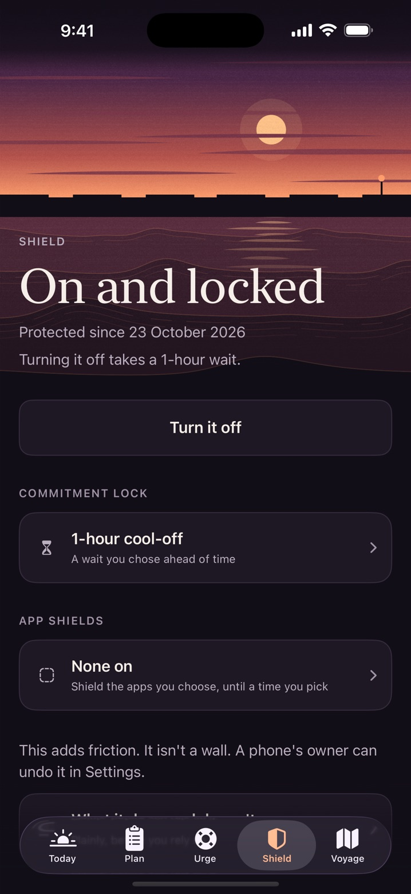
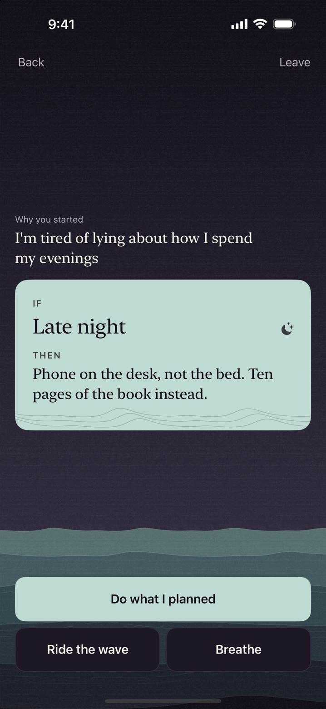
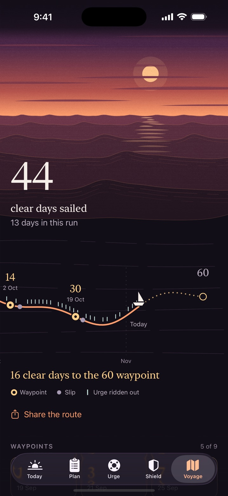

Ballast is an iPhone app for quitting porn and compulsive masturbation (PMO). It puts some friction in front of the easiest path, hands you your own plan when an urge hits, and keeps a record of progress that a slip can't erase.
iPhone, iOS 26 or later · No account · The whole urge flow is free, for good
Three parts
A shield, a plan and a voyage
Each one answers something people complain about in this category: filters that break things or trap them, help that's behind a paywall at 1am, and streaks that vanish.

Shield
One tap turns on the iOS adult-website filter. It sells friction, not walls.
FilterFREE Apple's adult-website filter, switched on from inside the app. It also turns off Safari private browsing, and you should know that before you tap.
Commitment lockPRO Turning protection off then needs either a cool-off you chose in advance (10 minutes, 1 hour or 24 hours) or a code held by someone you trust. If that person can't be reached, a 24-hour wait always works. Nobody gets trapped.
App shieldsPRO Pick apps in Apple's own picker and shield them until a time you choose, such as 7:00. The shield lifts the next time you open Ballast after that time.
The limit, plainly: a phone's owner can undo any of this in Settings. If Pro ends, locks release and the filter stays under your control. The free Screen Time steps come first in our guide, and you may not need more than those.

Urge plans
When it hits, you get your own words, not a pep talk.
One tap on what's happening. Your own triggers come first.
Your if-then card and your own reason appear, written on a calmer day.
You choose: breathe, ride the wave, or do the thing you planned. Then note how it went.
The whole flow is free, always, and works with no plan saved and no signal. One plan is free; Pro makes them unlimited. Try writing one here in your browser, no app needed.

Voyage
Clear days add up and never reset. A slip is data, not a verdict.
Clear days sailed accumulate for good. Your current run is still there, second.
Waypoints at 1, 3, 7, 14, 30, 60, 100, 180 and 365 clear days. Slips sit on the route as ordinary marks.
Backup and restore are free, through a file you keep. No account means no login to lose.
Patterns, full history and a weekly review are in Pro PRO
This category sells "dopamine detox", "rewiring" and 90-day countdowns. I couldn't find good evidence for those claims, so Ballast doesn't make them, and its copy is tested so it can't drift into them.
What it does: it uses skills from CBT and ACT, the two approaches most studied for this problem. That research looks promising and has real weaknesses. Here's what supports what, and where it's thin.
Private and secular
Nothing to sign up for
No account and no server. Your entries stay on your iPhone, and no browsing or app data leaves it. Apple and RevenueCat process purchases. The privacy policy lists the rest.
There's no religious framing. People of any faith or none are welcome, and if you want a faith-based app, the comparison names some.
What's free
Free and Pro, without the fine print
Nothing that helps in the moment costs anything. Pro is for the long haul, and you're never asked to buy during an urge or after a slip.
What each tier includes in Ballast 1.1
Free, for good
Pro
Whole urge flow, slip logging and after-slip support
Pro comes as a monthly or yearly subscription or a single lifetime purchase. The App Store shows the price for your country. The offer appears after setup, can always be dismissed, and has no countdown or made-up discount. Apple handles billing, so you cancel in Settings like any other subscription.
There's no community. No account and no server means no groups or forums. Plenty of people find other people are what helps most, and other apps do that better.
It can't stop a determined phone owner. No App Store app can. The aim is a pause long enough to use it.
The whole urge flow, slip support, the adult-website filter, your streak and clear days, backup and restore are free for good. Pro adds the commitment lock, app shields, unlimited urge plans, insights, the rest of the course and library, and full history.
Does Ballast block websites?
Yes. One tap turns on the iOS adult-website filter through Apple's Family Controls. It adds friction, not a wall: a phone's owner can undo it in Settings, and no filter catches everything.
Does anything I write leave my phone?
Ballast sends none of it anywhere. There is no account and no server, and personal entries stay on your iPhone, though an iCloud or computer backup of the phone can include them. Ballast never sees your browsing or which apps you pick to shield. Apple and RevenueCat process purchases.
Is Ballast treatment?
No. Ballast is a self-tracking and educational tool that uses skills from CBT and ACT. It does not diagnose anything and does not replace professional care.